1. 現物が1種類しかない二向聴：9pの当たり方を数える
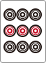 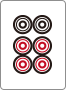 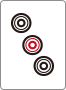
11/15 ねじまき鳥先生
  

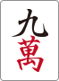

切り。 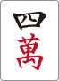 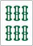

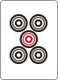 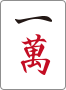

切り。七対子一向聴を維持しながら、面子手への変化も残す。 例えば 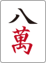

1枚目はスルーしても残り3枚。2枚目を見送ると残り2枚の超愚形になるため、同じ手格好で食いタンへ進めるなら2枚目からチー。 1枚目を鳴くこと自体も講師は否定していない。出た牌が同じでも、見送った後の残り枚数が変われば基準も変わる。
34:10の場面をYouTubeで見る
切り。2枚目のをチーする食いタン手順に備える。 をチーすると、 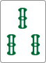

を先に切る。・はどちらも危険牌で、を残しても安全牌確保にはならない。 ドラが重なれば満貫が見える。後で明確な安全牌を引いたなら、そこでドラと入れ替える選択はある。
38:04の場面をYouTubeで見る
・ 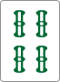

講師はこのNANAリーグの点況では立直。安い和了で2着を確保するより、トップに届く打点を取りに行く。 飛び終了のある段位戦なら、下家を飛ばすロンやツモで2着終了できるためダマも候補。NAGAのバーだけで終了条件の扱いは断定しない。
50:07の場面をYouTubeで見る
切りなら、を引いて 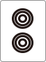 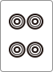 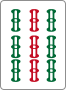

切り。平和・234三色を目指し、・発は後手で押し返すために残す。 ・の縦引きで取れる愚形リーノミは、2000点を和了しても大差が残る。安い和了で目的を達成できる点況なら、縦受けを残す価値は上がる。
66:00の場面をYouTubeで見る
をチーして234三色の片和了一向聴にする案を講師は支持。 序盤は安い連荘のために受けを広げる価値が低かった。ただし他家に先に和了されそうになったら、門前の理想形を待つより、鳴いて打点のあるルートを間に合わせる。
69:10の場面をYouTubeで見る